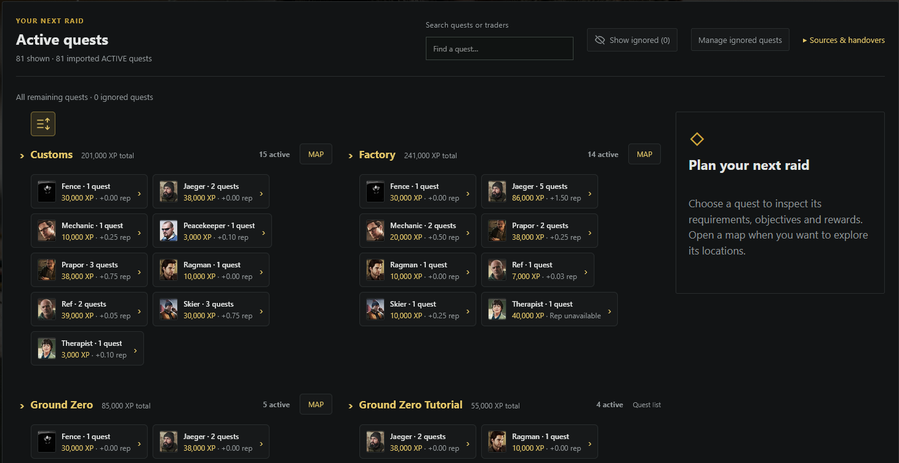

Pick a map by its quests
Once you link the Logs folder, Hervolario checks for a refresh automatically at startup. It reads local copies to identify active and completed quests and update your PMC level when the records support it. You can also refresh after a raid while the app is open.
